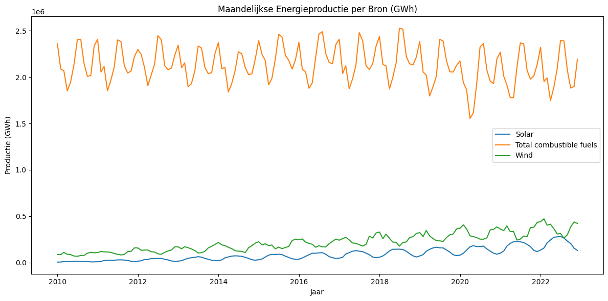
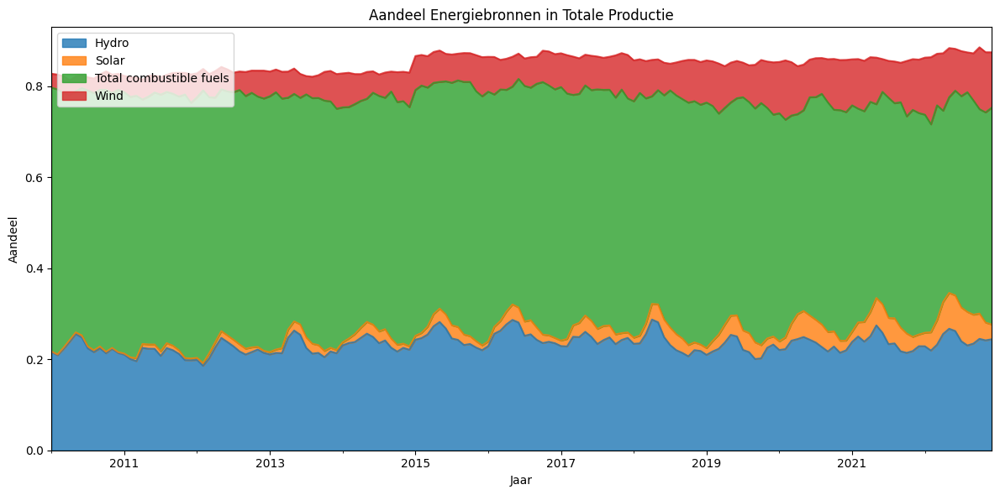
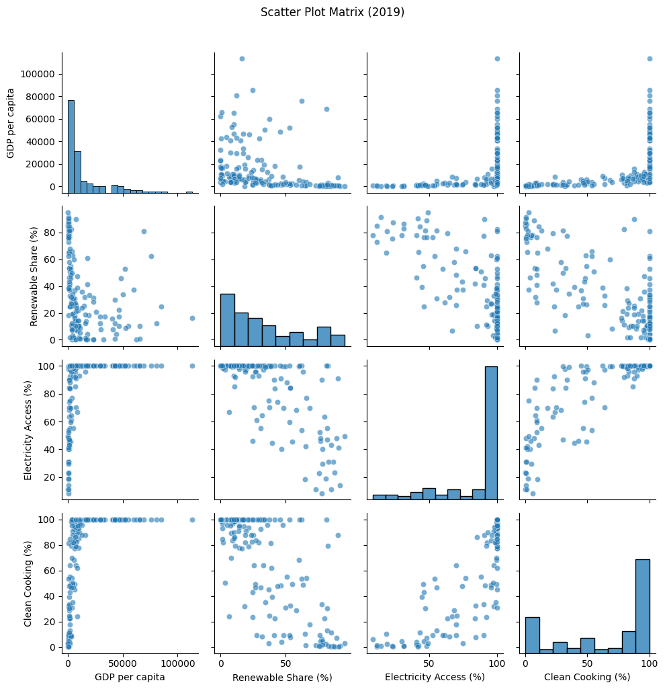
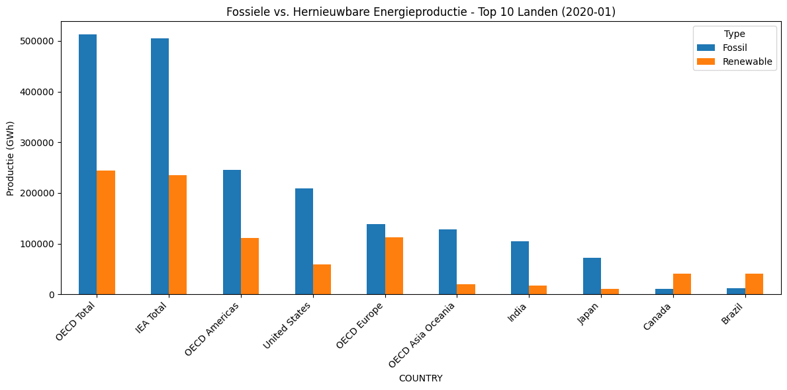

import pandas as pd
import plotly.express as px
import seaborn as sns
import matplotlib.pyplot as plt
# Laad de originele datasets
monthly_df = pd.read_csv("data.csv")
global_df = pd.read_csv("global-data-on-sustainable-energy.csv")
---------------------------------------------------------------------------
FileNotFoundError Traceback (most recent call last)
Cell In[1], line 7
4 import matplotlib.pyplot as plt
6 # Laad de originele datasets
----> 7 monthly_df = pd.read_csv("data.csv")
8 global_df = pd.read_csv("global-data-on-sustainable-energy.csv")
File ~/Documents/University/KI1/Subjects/InfoVisualisatie/miniconda3/envs/jupyterbook/lib/python3.10/site-packages/pandas/io/parsers/readers.py:1026, in read_csv(filepath_or_buffer, sep, delimiter, header, names, index_col, usecols, dtype, engine, converters, true_values, false_values, skipinitialspace, skiprows, skipfooter, nrows, na_values, keep_default_na, na_filter, verbose, skip_blank_lines, parse_dates, infer_datetime_format, keep_date_col, date_parser, date_format, dayfirst, cache_dates, iterator, chunksize, compression, thousands, decimal, lineterminator, quotechar, quoting, doublequote, escapechar, comment, encoding, encoding_errors, dialect, on_bad_lines, delim_whitespace, low_memory, memory_map, float_precision, storage_options, dtype_backend)
1013 kwds_defaults = _refine_defaults_read(
1014 dialect,
1015 delimiter,
(...)
1022 dtype_backend=dtype_backend,
1023 )
1024 kwds.update(kwds_defaults)
-> 1026 return _read(filepath_or_buffer, kwds)
File ~/Documents/University/KI1/Subjects/InfoVisualisatie/miniconda3/envs/jupyterbook/lib/python3.10/site-packages/pandas/io/parsers/readers.py:620, in _read(filepath_or_buffer, kwds)
617 _validate_names(kwds.get("names", None))
619 # Create the parser.
--> 620 parser = TextFileReader(filepath_or_buffer, **kwds)
622 if chunksize or iterator:
623 return parser
File ~/Documents/University/KI1/Subjects/InfoVisualisatie/miniconda3/envs/jupyterbook/lib/python3.10/site-packages/pandas/io/parsers/readers.py:1620, in TextFileReader.__init__(self, f, engine, **kwds)
1617 self.options["has_index_names"] = kwds["has_index_names"]
1619 self.handles: IOHandles | None = None
-> 1620 self._engine = self._make_engine(f, self.engine)
File ~/Documents/University/KI1/Subjects/InfoVisualisatie/miniconda3/envs/jupyterbook/lib/python3.10/site-packages/pandas/io/parsers/readers.py:1880, in TextFileReader._make_engine(self, f, engine)
1878 if "b" not in mode:
1879 mode += "b"
-> 1880 self.handles = get_handle(
1881 f,
1882 mode,
1883 encoding=self.options.get("encoding", None),
1884 compression=self.options.get("compression", None),
1885 memory_map=self.options.get("memory_map", False),
1886 is_text=is_text,
1887 errors=self.options.get("encoding_errors", "strict"),
1888 storage_options=self.options.get("storage_options", None),
1889 )
1890 assert self.handles is not None
1891 f = self.handles.handle
File ~/Documents/University/KI1/Subjects/InfoVisualisatie/miniconda3/envs/jupyterbook/lib/python3.10/site-packages/pandas/io/common.py:873, in get_handle(path_or_buf, mode, encoding, compression, memory_map, is_text, errors, storage_options)
868 elif isinstance(handle, str):
869 # Check whether the filename is to be opened in binary mode.
870 # Binary mode does not support 'encoding' and 'newline'.
871 if ioargs.encoding and "b" not in ioargs.mode:
872 # Encoding
--> 873 handle = open(
874 handle,
875 ioargs.mode,
876 encoding=ioargs.encoding,
877 errors=errors,
878 newline="",
879 )
880 else:
881 # Binary mode
882 handle = open(handle, ioargs.mode)
FileNotFoundError: [Errno 2] No such file or directory: 'data.csv'
import matplotlib.pyplot as plt
main_sources = ['Solar', 'Wind', 'Total combustible fuels']
df = monthly_df[monthly_df['PRODUCT'].isin(main_sources)].copy()
df['DATE'] = pd.to_datetime(df['YEAR'].astype(str) + '-' + df['MONTH'].astype(str))
pivot = df.pivot_table(index='DATE', columns='PRODUCT', values='VALUE', aggfunc='sum').dropna()
plt.figure(figsize=(12, 6))
for col in pivot.columns:
plt.plot(pivot.index, pivot[col], label=col)
plt.title("Maandelijkse Energieproductie per Bron (GWh)")
plt.xlabel("Jaar")
plt.ylabel("Productie (GWh)")
plt.legend()
plt.tight_layout()
plt.show()

stack_sources = ['Solar', 'Wind', 'Hydro', 'Total combustible fuels']
df = monthly_df[monthly_df['PRODUCT'].isin(stack_sources)].copy()
df['DATE'] = pd.to_datetime(df['YEAR'].astype(str) + '-' + df['MONTH'].astype(str))
pivot_share = df.pivot_table(index='DATE', columns='PRODUCT', values='share', aggfunc='mean').fillna(0)
pivot_share.plot.area(figsize=(12, 6), alpha=0.8)
plt.title("Aandeel Energiebronnen in Totale Productie")
plt.xlabel("Jaar")
plt.ylabel("Aandeel")
plt.legend(loc='upper left')
plt.tight_layout()
plt.show()

import pandas as pd
import plotly.express as px
# Kolomnaam instellen
col = 'Renewable energy share in the total final energy consumption (%)'
# Filter op rijen met geldige waarden
filtered = global_df[['Entity', 'Year', col]].dropna()
# Kies per land het laatste jaar met data
latest = filtered.loc[filtered.groupby('Entity')['Year'].idxmax()].copy()
latest.rename(columns={col: 'Renewable Share (%)'}, inplace=True)
# Plot met Plotly
fig = px.choropleth(
latest,
locations="Entity",
locationmode="country names",
color="Renewable Share (%)",
color_continuous_scale="YlGn",
title="Laatste Beschikbare Renewable Energy Share per Land",
hover_name="Entity",
hover_data={"Year": True}
)
fig.update_layout(
geo=dict(
showframe=False,
showcoastlines=True,
projection_type="natural earth"
),
coloraxis_colorbar=dict(
title="% Renewable",
ticks="outside"
)
)
fig.show()
import seaborn as sns
import matplotlib.pyplot as plt
# Kies een recent jaar met voldoende data
year = 2019
cols = [
'gdp_per_capita',
'Renewable energy share in the total final energy consumption (%)',
'Access to electricity (% of population)',
'Access to clean fuels for cooking'
]
df = global_df[global_df['Year'] == year][cols].dropna()
# Herbenoemen voor duidelijke labels
df.columns = ['GDP per capita', 'Renewable Share (%)', 'Electricity Access (%)', 'Clean Cooking (%)']
sns.pairplot(df, diag_kind='hist', plot_kws={'alpha':0.6})
plt.suptitle(f"Scatter Plot Matrix ({year})", y=1.02)
plt.tight_layout()
plt.show()

# Kies één maand/jaar
year = 2020
month = 1
df = monthly_df[(monthly_df['YEAR'] == year) & (monthly_df['MONTH'] == month)].copy()
# Alleen relevante bronnen
df = df[df['PRODUCT'].isin(['Total combustible fuels', 'Solar', 'Wind', 'Hydro'])]
# Categoriseer als 'Fossil' of 'Renewable'
def label_type(product):
return 'Fossil' if product == 'Total combustible fuels' else 'Renewable'
df['Type'] = df['PRODUCT'].apply(label_type)
# Groepeer productie per land per type
agg = df.groupby(['COUNTRY', 'Type'])['VALUE'].sum().unstack().fillna(0)
# Top 10 landen met hoogste totale productie
top_countries = agg.sum(axis=1).sort_values(ascending=False).head(10)
top_agg = agg.loc[top_countries.index]
# Plot
top_agg.plot(kind='bar', figsize=(12, 6), stacked=False)
plt.title(f"Fossiele vs. Hernieuwbare Energieproductie - Top 10 Landen ({year}-{month:02})")
plt.ylabel("Productie (GWh)")
plt.xticks(rotation=45, ha='right')
plt.tight_layout()
plt.show()

import pandas as pd
import matplotlib.pyplot as plt
# Dataset inladen
monthly_df = pd.read_csv("data.csv")
# ❌ Lijst met niet-landen uitsluiten
exclude_entities = [
'World', 'Africa', 'Asia', 'Europe', 'North America', 'South America',
'European Union (27)', 'European Union (28)', 'OECD', 'Non-OECD',
'Non-OECD Asia', 'Non-OECD Europe and Eurasia', 'Middle East', 'Eurasia',
'Other Asia Pacific', 'Central & South America', 'IEA Net Zero by 2050 scenario',
'IEA Total', 'IEA Europe', 'IEA Americas', 'IEA Asia Oceania',
'OECD Total', 'OECD Americas', 'OECD Europe', 'OECD Asia Oceania'
]
# 📅 Filter op jaar + maand
year = 2020
month = 1
df = monthly_df[(monthly_df['YEAR'] == year) & (monthly_df['MONTH'] == month)].copy()
# 🔌 Alleen gewenste producten
df = df[df['PRODUCT'].isin(['Total combustible fuels', 'Solar', 'Wind', 'Hydro'])]
# 🧹 Verwijder niet-landen
df = df[~df['COUNTRY'].isin(exclude_entities)]
# 🌱 Label 'Fossil' of 'Renewable'
df['Type'] = df['PRODUCT'].apply(lambda x: 'Fossil' if x == 'Total combustible fuels' else 'Renewable')
# 📊 Groepeer per land/type
agg = df.groupby(['COUNTRY', 'Type'])['VALUE'].sum().unstack().fillna(0)
# 🔝 Top 10 landen met hoogste totale productie
top_countries = agg.sum(axis=1).sort_values(ascending=False).head(10)
top_agg = agg.loc[top_countries.index]
# 📈 Plot de bar chart
top_agg.plot(kind='bar', figsize=(12, 6), stacked=False)
plt.title(f"Fossiele vs. Hernieuwbare Energieproductie – Top 10 Landen ({year}-{month:02})")
plt.ylabel("Productie (GWh)")
plt.xticks(rotation=45, ha='right')
plt.tight_layout()
plt.show()

import pandas as pd
import plotly.graph_objects as go
# 1. Selectie en data voorbereiden
selected = ['Germany', 'India', 'Nigeria', 'Afghanistan']
df = global_df[global_df['Entity'].isin(selected)].copy()
# Renaming voor kortere kolomnamen
df.rename(columns={
'Renewable energy share in the total final energy consumption (%)': 'Renewable_Share',
'Access to electricity (% of population)': 'Access_Electricity'
}, inplace=True)
# 2. Functie om lijnen met directe labels te tekenen
def make_line_chart(y_col, title, y_title):
fig = go.Figure()
colors = px.colors.qualitative.Dark24 # of kies een eigen palet
for i, country in enumerate(selected):
d = df[df['Entity'] == country]
fig.add_trace(go.Scatter(
x=d['Year'], y=d[y_col],
mode='lines',
name=country,
line=dict(width=3, color=colors[i]),
hovertemplate=f"<b>{country}</b><br>Year: %{{x}}<br>{y_title}: %{{y:.1f}}<extra></extra>"
))
# Direct label bij laatste punt
fig.add_annotation(
x=d['Year'].max(), y=d[y_col].iloc[-1],
text=country,
xanchor='left',
yanchor='middle',
font=dict(color=colors[i], size=12),
showarrow=False
)
fig.update_layout(
template="simple_white",
title=dict(text=title, x=0.5, xanchor='center'),
xaxis=dict(
title="Year",
tickmode="linear",
dtick=2,
showgrid=False
),
yaxis=dict(
title=y_title + " (%)",
showgrid=True,
gridcolor="LightGray",
tickformat=",.0f"
),
margin=dict(l=60, r=20, t=80, b=50),
showlegend=False
)
fig.show()
# 3. Chart 1: Renewable Share
make_line_chart(
y_col='Renewable_Share',
title='Renewable Energy Share Over Time',
y_title='Renewable Share'
)
# 4. Chart 2: Access to Electricity
make_line_chart(
y_col='Access_Electricity',
title='Access to Electricity Over Time',
y_title='Access to Electricity'
)
import pandas as pd
import plotly.graph_objects as go
# Load and categorize data
monthly_df = pd.read_csv("data.csv")
monthly_df['TIME'] = pd.to_datetime(monthly_df['TIME'], format='%B %Y') # Correct format for "January 2010"
renewable_products = ['Hydro', 'Wind', 'Solar', 'Geothermal']
fossil_fuel_products = ['Total combustible fuels']
def assign_energy_type(product):
if product in renewable_products: return 'Renewable'
if product in fossil_fuel_products: return 'Fossil Fuel'
return 'Other'
monthly_df['Energy_Type'] = monthly_df['PRODUCT'].apply(assign_energy_type)
# 2. Aggregate and calculate percentages
agg = (
monthly_df
.groupby(['TIME', 'Energy_Type'])['VALUE']
.sum()
.unstack(fill_value=0)
)
agg['Total'] = agg.sum(axis=1)
for col in ['Renewable', 'Fossil Fuel']:
agg[col + '_pct'] = agg[col] / agg['Total'] * 100
agg = agg.reset_index().sort_values('TIME')
# 3. Create area chart with Graph Objects
fig = go.Figure()
# Fossil fuel area
fig.add_trace(go.Scatter(
x=agg['TIME'], y=agg['Fossil Fuel_pct'],
name='Fossil Fuel',
mode='lines',
line=dict(width=0.5, color='firebrick'),
fill='tozeroy',
fillcolor='rgba(178,34,34,0.6)',
hovertemplate='Date: %{x|%Y-%m}<br>Fossil Fuel: %{y:.0f}%<extra></extra>'
))
# Renewable area, stacked above Fossil
fig.add_trace(go.Scatter(
x=agg['TIME'], y=agg['Renewable_pct'] + agg['Fossil Fuel_pct'],
name='Renewable',
mode='lines',
line=dict(width=0.5, color='forestgreen'),
fill='tonexty',
fillcolor='rgba(34,139,34,0.6)',
customdata=agg['Renewable_pct'], # Pass renewable percentage for hover
hovertemplate='Date: %{x|%Y-%m}<br>Renewable: %{customdata:.0f}%<extra></extra>'
))
# 4. Add direct labels at the end
last = agg.iloc[-1]
annotations = [
dict(x=last['TIME'], y=last['Fossil Fuel_pct']/2,
text='Fossil Fuel', showarrow=False,
font=dict(color='firebrick', size=12)),
dict(x=last['TIME'], y=last['Fossil Fuel_pct'] + last['Renewable_pct']/2,
text='Renewable', showarrow=False,
font=dict(color='forestgreen', size=12)),
]
# 5. Layout & styling
fig.update_layout(
template='simple_white',
title=dict(text='Monthly Energy Production Breakdown by Type (Global %)', x=0.5),
xaxis=dict(
title='Date',
tickformat='%Y',
dtick='M12',
showgrid=False
),
yaxis=dict(
title='Share (%)',
range=[0,100],
showgrid=True,
gridcolor='LightGray',
tickformat='.0f'
),
margin=dict(l=60, r=20, t=80, b=50),
showlegend=False,
annotations=annotations
)
fig.show()
import pandas as pd
import plotly.express as px
# Dataset laden en kolom hernoemen
df = pd.read_csv("global-data-on-sustainable-energy.csv")
df = df.rename(columns={
"Renewable energy share in the total final energy consumption (%)": "Renewable_Share"
}).dropna(subset=["gdp_per_capita", "Renewable_Share", "Access to clean fuels for cooking"])
# Scatterplot met aangepaste styling
fig = px.scatter(
df,
x="gdp_per_capita",
y="Renewable_Share",
animation_frame="Year",
hover_name="Entity",
hover_data={
"gdp_per_capita": ":,.0f",
"Renewable_Share": ":.1f",
"Access to clean fuels for cooking": ":.0f"
},
log_x=True,
trendline="lowess",
title="Renewable Energy Share vs. GDP per Capita (log scale)",
labels={
"gdp_per_capita": "GDP per Capita (USD)",
"Renewable_Share": "Renewable Share (%)",
"Access to clean fuels for cooking": "Clean Fuels (%)"
},
color="Access to clean fuels for cooking",
color_continuous_scale="Viridis",
width=900,
height=600,
)
# Marker- en lijnstijl
fig.update_traces(
marker=dict(size=8, opacity=0.7, line=dict(width=1, color="DarkSlateGrey")),
selector=dict(mode="markers")
)
# Clean white theme, gridlines en slider-layout
fig.update_layout(
template="plotly_white",
xaxis=dict(
type="log",
tickformat=",",
gridcolor="LightGray",
title="GDP per Capita (log scale)"
),
yaxis=dict(
gridcolor="LightGray",
title="Renewable Share (%)"
),
coloraxis_colorbar=dict(
title="Clean Fuels (%)",
ticks="outside"
),
sliders=[dict(
currentvalue=dict(prefix="Year: "),
pad=dict(t=50)
)],
title=dict(x=0.5, xanchor="center"),
margin=dict(l=60, r=20, t=80, b=60)
)
fig.show()
import pandas as pd
import plotly.express as px
# Load the dataset
global_df = pd.read_csv("global-data-on-sustainable-energy.csv")
# Rename the column for convenience
global_df_renamed = global_df.rename(columns={'Renewable energy share in the total final energy consumption (%)': 'Renewable_Share'})
# Filter out non-country entities like 'World', 'European Union', etc.
df_countries = global_df_renamed[~global_df_renamed['Entity'].isin(['World', 'European Union', 'Africa', 'Asia', 'North America', 'South America', 'Europe', 'Oceania'])].copy()
# Select a subset of interesting countries for the small multiples
sample_countries = ['United States', 'China', 'India', 'Germany', 'Brazil', 'Nigeria', 'Japan', 'Australia', 'Norway', 'Saudi Arabia']
df_selected_countries = df_countries[df_countries['Entity'].isin(sample_countries)].dropna(subset=['Renewable_Share']).sort_values(by=['Entity', 'Year'])
# Corrected: Changed 'facet_wrap' to 'facet_col'
fig_facet_lines = px.line(
df_selected_countries,
x="Year",
y="Renewable_Share",
color="Entity", # Each country gets its own color (though it will be redundant with faceting)
facet_col="Entity", # Create a subplot for each country
facet_col_wrap=5, # Arrange in 5 columns
title="Renewable Energy Share Trends for Selected Countries",
labels={
"Renewable_Share": "Renewable Share (%)",
"Entity": "Country"
},
height=800 # Adjust height based on number of countries
)
fig_facet_lines.update_yaxes(matches=None) # Allow independent y-axes for better comparison if scales differ
fig_facet_lines.for_each_annotation(lambda a: a.update(text=a.text.split("=")[1])) # Clean up facet titles
fig_facet_lines.show()
import pandas as pd
import plotly.express as px
import numpy as np
# 1. Data inladen en hernoemen
csv_path = "global-data-on-sustainable-energy.csv"
df = pd.read_csv(csv_path)
df.rename(
columns={
"Renewable energy share in the total final energy consumption (%)": "Renewable_Share"
},
inplace=True
)
# 2. Jaar-op-jaar groei berekenen per land
df.sort_values(["Entity", "Year"], inplace=True)
df['Growth'] = df.groupby("Entity")["Renewable_Share"].diff()
# 3. Categoriseer groei in Decline, Neutral, Increase
def categorize_growth(x):
if pd.isna(x):
return np.nan
return 'Decline' if x < 0 else ('Neutral' if x == 0 else 'Increase')
growth_labels = ['Decline', 'Neutral', 'Increase']
df['Growth_Cat'] = df['Growth'].apply(categorize_growth)
# 4. Choropleth met earth tones kleuren en jaar-animatie
color_map = {
'Decline': '#d62728', # red for decline
'Neutral': '#7f7f7f', # grey for neutral
'Increase': '#1f77b4' # blue for increase
} # contrasting palette for clarity
fig = px.choropleth(
df,
locations="Entity",
locationmode="country names",
color="Growth_Cat",
category_orders={"Growth_Cat": growth_labels},
color_discrete_map=color_map,
hover_name="Entity",
hover_data={"Renewable_Share": True, "Growth": ":.2f"},
animation_frame="Year",
title="Annual Growth of Renewable Energy Share per Country",
width=1000,
height=600
)
# 5. Kaartstijl met lichtblauwe oceaan en witte landen zonder data
fig.update_geos(
showocean=True,
oceancolor='lightblue',
showlakes=True,
lakecolor='lightblue',
showcountries=True,
countrycolor='LightGray',
showframe=False,
projection_type='equirectangular',
landcolor='white'
)
# 6. Eenvoudige legendebalk bovenaan met earth tones
gap_top = 0.08
bar_height = 0.03 # smaller bar for more map space
t_colors = ['#d62728', '#7f7f7f', '#1f77b4'] # match color_map
t_labels = ['Decline (<0%)', 'Neutral (=0%)', 'Increase (>0%)']
shapes = []
annotations = []
for i, col in enumerate(t_colors):
x0, x1 = i/3, (i+1)/3
shapes.append({
'type': 'rect', 'xref': 'paper', 'yref': 'paper',
'x0': x0, 'x1': x1, 'y0': 1+gap_top, 'y1': 1+gap_top+bar_height,
'fillcolor': col, 'line_width': 0
})
annotations.append({
'xref': 'paper', 'yref': 'paper',
'x': (x0+x1)/2, 'y': 1+gap_top-0.02,
'text': t_labels[i], 'showarrow': False,
'font': {'size': 12, 'family': 'Arial', 'color': '#333'},
'align': 'center'
})
fig.update_layout(
shapes=shapes,
annotations=annotations,
margin={'t':100, 'b':50, 'l':20, 'r':20}, # reduce margins to enlarge map
showlegend=False
)
# 7. Slider start op 2001
years = sorted(df['Year'].dropna().unique())
start_idx = years.index(2001) if 2001 in years else 0
fig.update_layout(
sliders=[{
'currentvalue': {'prefix': 'Year: '},
'pad': {'t': 60},
'active': start_idx
}]
)
# 8. Toon de plot
fig.show()
import pandas as pd
import plotly.express as px
# 1) Data inladen
monthly = pd.read_csv("data.csv")
# 2) Definieer welke producten je wilt samenvatten
# (je kunt de lijst uitbreiden of opschonen)
sources = ['Coal', 'Oil', 'Natural Gas', 'Hydro', 'Wind', 'Solar', 'Nuclear', 'Biomass']
monthly = monthly[monthly['PRODUCT'].isin(sources)]
# 3) Totalen per land/jaar en vind de grootste bron
agg = (
monthly
.groupby(['COUNTRY','YEAR','PRODUCT'])['VALUE']
.sum()
.reset_index()
)
# voor elke land+jaar de PRODUCT met hoogste productie kiezen
dominant = (
agg.sort_values(['COUNTRY','YEAR','VALUE'], ascending=[True,True,False])
.groupby(['COUNTRY','YEAR'])
.first()
.reset_index()
.rename(columns={'PRODUCT':'Dominant_Source'})
)
# 4) Choropleth met jaar‐animatie op Dominant_Source
color_map = {
'Coal': '#4C4C4C', # donkergrijs
'Oil': '#A569BD', # paars
'Natural Gas': '#3498DB', # blauw
'Hydro': '#1ABC9C', # turquoise
'Wind': '#2ECC71', # groen
'Solar': '#F1C40F', # geel
'Nuclear': '#E67E22', # oranje
'Biomass': '#95A5A6', # lichtgrijs
}
fig = px.choropleth(
dominant,
locations="COUNTRY",
locationmode="country names",
color="Dominant_Source",
animation_frame="YEAR",
color_discrete_map=color_map,
title="Dominant Energy Source per Country Over Time",
labels={"Dominant_Source":"Dominant Source"},
width=1000, height=600
)
fig.update_layout(
legend_title_text='Energy Source',
margin=dict(t=100, b=50, l=50, r=50)
)
fig.show()